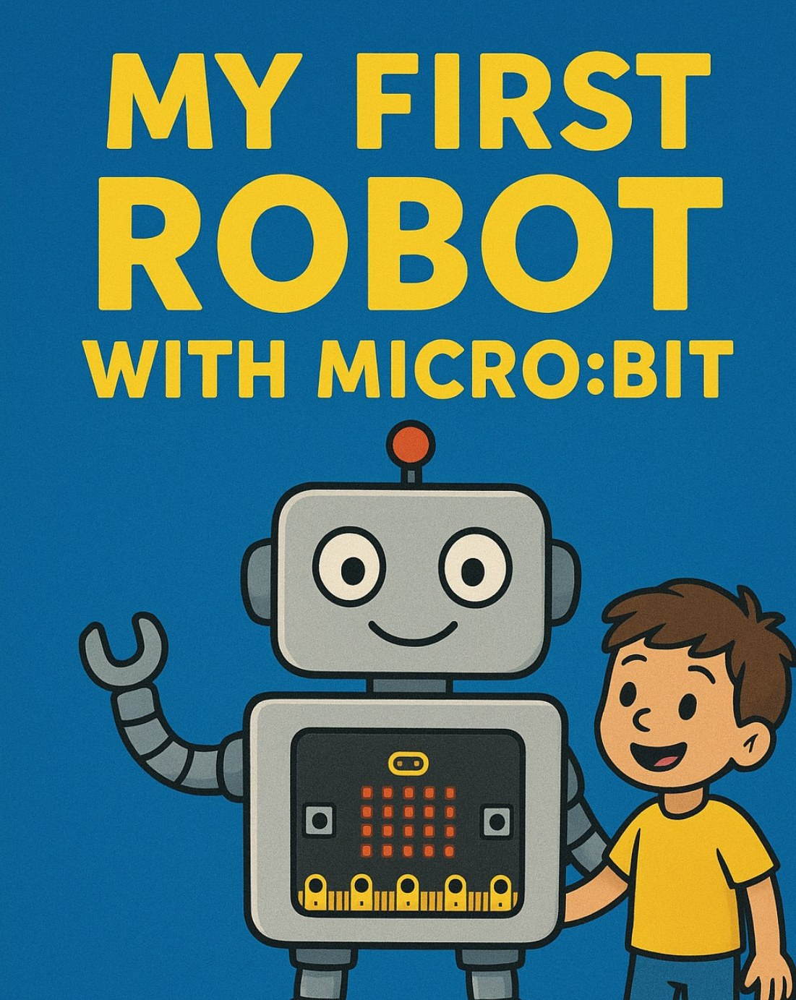

Founder · Robotics
Founder and Managing Partner of MakerWorks Lab, a space where people learn robotics, Physical AI and hands-on hardware engineering. I build with Hugging Face's open-source LeRobot.
About
An entrepreneur and technologist based in India, with a background spanning enterprise IT consulting and now deep-tech education.
AI, robotics and technology innovation, and getting hands-on tools into the hands of the next generation of builders.
Telugu, Hindi and English.
Venture
Mumbai's maker space in Malad East. Innovate. Build. Inspire. Students learn by building, from first robots to embodied AI, vision systems and robot learning.
LeRobot Arms, Reachy Mini and OpenDuck Mini V2.
Beginner (ages 8–10), Intermediate (ages 11–14) and a Portfolio Program for Grade 8+.
WRO, VEX IQ, Coolest Projects and Mekathlon.
Ignite, Builder and Dominate passes for makers of every level.
Journey
Founded and lead MakerWorks Lab (operating as MakerWorks LLP), a robotics, Physical AI and technology education lab in Malad East, Mumbai.
Building with LeRobot, Hugging Face's open-source library for real-world robotics and robot learning, and working towards my first contributions upstream.
A separate full-stack Java programme I completed at Atos Syntel, learning Java over the year and finishing with a capstone project.
Associate Consultant at Atos Syntel, a global IT services and consulting company. A learning-focused role.
Toolbox
Work
Wired open-ear earphones built around a salvaged driver, designed in one parametric Blender script. Both ears printed and worn. Read the build → · Source
A web dashboard and 3D digital twin for SO-101 leader/follower arm teleoperation, on top of LeRobot. Read more → · Source
A live terminal dashboard for lerobot-train: progress bar, ETA, loss and gradient-norm plots, and a trend indicator. Read more → · Source
A robotics and Physical AI maker space in Mumbai, with structured programmes, memberships and competition teams. Read more →
I assembled a leader and follower SO-101 pair. Explore the interactive 3D exploded view. Open the 3D model →
Embodied AI programmes on the open-source Reachy Mini robot, covering vision and interaction. I assembled my own and am planning a Hugging Face app for it. See the page →
Building and programming the open-source bipedal duck robot as a hardware and control project.
Preparing student teams for WRO, VEX IQ, Coolest Projects and Mekathlon.
Teleoperation and training tools built on Hugging Face's open-source robotics library.
Featured project
A local web dashboard and 3D digital twin for SO-101 leader/follower robot arm teleoperation, built on the open-source LeRobot library. About 3,500 lines, an 11-endpoint backend and a Three.js twin built from the official CAD.
Featured project
Wired, passive open-ear earphones designed in one parametric Blender script around a salvaged driver, plus a cable-reel case. Both ears printed and worn.
Also built
Apps and tools I built for MakerWorks Lab and for learning, all on GitHub.
A web app that turns monthly attendance into invoices. Parents get secure read-only links, with a QR scanner, WhatsApp sharing, recurring class schedules and expense tracking.
Feb 2026 · Source on GitHub
A personal finance app for income, expenses, wallets, investments, subscriptions and debts, with AI receipt scanning, PIN lock and PDF reports. Runs as a PWA and on Android and iOS.
Feb 2026 · Source on GitHub
A web dashboard that drives BBC micro:bit robots over Web Bluetooth (UART over BLE), with a written technical guide explaining how it works.
Feb 2026 · Source on GitHub
A multi-page website for the lab: programme levels, gallery, blog and learning pages.
Jul 2025 · Source on GitHub
An inventory app for components and kits, with kit creation and assign-and-return tracking for the lab.
Jun 2025 · Source on GitHub
A competition scoreboard with admin and viewer pages, an Arduino quiz with a certificate, and a camera-based attendance screen, all built for classes at the lab.
2025–2026 · Source on GitHub
Content
I make videos about technology on the Maker Works YouTube channel.
Author

A Beginner's Guide to Coding, Electronics, and Fun Projects · Maker Works Lab, Mumbai · 2025
Learning
Krishna University · Computer Science
April 2019 – March 2022
FAQ
Ajay Ummadi is an entrepreneur and technologist based in India. He is the Founder and Managing Partner of MakerWorks Lab, a robotics and Physical AI maker space in Malad East, Mumbai, and builds robot-arm tools on Hugging Face's open-source LeRobot library.
MakerWorks Lab is a maker space in Malad East, Mumbai, teaching robotics, Physical AI and hands-on hardware engineering with platforms such as LeRobot Arms, Reachy Mini and OpenDuck Mini V2. Students also prepare for WRO, VEX IQ, Coolest Projects and Mekathlon.
A local web app by Ajay Ummadi that runs, monitors and visualizes teleoperation of two SO-101 robot arms: a hand-held leader arm controls a follower arm in real time. It builds on LeRobot and includes live telemetry, session recording, a calibration manager and a 3D digital twin. It is a separate add-on and not endorsed by LeRobot.
Wired, passive open-ear earphones designed by Ajay Ummadi in a single parametric Blender Python script around a salvaged earphone driver. The pod sits in front of the ear canal with an arm over the ear. Both ears are printed and worn; sound quality and the cable-reel case are not yet tested.
Email ummadi.ajay@gmail.com, or connect on LinkedIn at linkedin.com/in/ajayummadi.
Contact
For MakerWorks Lab programmes, partnerships or collaborations.